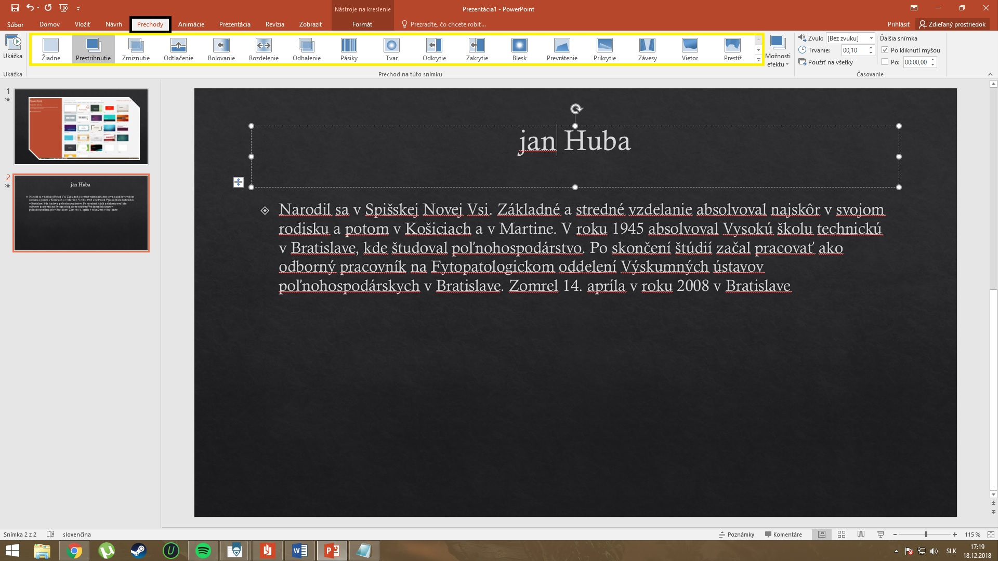

MS POWERPOINT
Microsoft PowerPoint (ďalej len PowerPoint) je grafický program na tvorbu prezentácií. Môžeme v ňom vytvoriť a zobraziť sériu snímok, obsahujúcich text,obrázky, grafy, diagramy, zvuk, animácie alebo video, a použiť pritom rôzne animačné efekty. Počítačovú prezentáciu môžeme previesť aj do podoby priehľadných fólií, tlačených materiálov alebo ju publikovať na Internete vo forme webovej stránky. Navyše, keďže je PowerPoint súčasťou balíka MS Office, v prezentácii môžeme ľahko kombinovať osnovy z aplikácie Word, listy z aplikácie Excel, obrázky a ilustrácie z galérie médií.Prostredie MS POWERPOINT
Prostredie programu PowerPoint obsahuje niekoľko častí :- hlavné menu
- panel nástrojov
- Karty (Domov, Vložiť, ...)
- Pracovné plocha
- Náhľad snímkov
PREZENTÁCIA
Je to text, spravidla pripravený v písanej forme, avšak sprostredkovaný v ústnej forme. Znamená to, že prezentácia je určitý druh písanej podoby vytvorený v prostredí. Informácie v prezentácii sú písané v podobe bodov alebo jednoduchých viet, sprevádzané vizuálnymi prostriedkami. Avšak samotná písaná pomôcka je podávaná v ústnej forme.SNÍMKA
Základným pilierom každej prezentácie je snímka, ktorú vkladáme v karte Domov > Nová snímka. Do snímky vkladáme multimediálny obsah rôzneho druhu, okrem textu sa jedná o obrázky, audio (vrátane hovoreného komentára) alebo video (vrátane online videa z youtube alebo facebook) a ďalšie.OBJEKT
Pod pojmom objekt rozumieme akýkoľvek obsah ktorý vkládame do prezentácie (snímky) napr. obrázok, video, tabuľka, graf...Funkcie MS POWERPOINT
MS Powerpoint obsahuje mnoho užitočných funkcií:- Predlohy prezentácií
- Vkladanie grafických objektov a tabuliek (SmartArt)
- Vkladanie videoklipov a zvuku
- Vkladanie zvláštných efektov (prechody, animácie)
- Exportovanie prezentácie do formátu videa
Vytvorenie prezentácie a práca so softvérom
Po spustení Powerpointu nám vyskoči okno ktoré na ponúka viacero možností: môžme si vybrať prázdnu prezentáciu (bez pozadia a akýchkoľvek iných uprav) alebo prednastavené šablony Pre vloženie napr. textového poľa jednoducho klikneme na "Textové pole" a potom klikneme na miesto kam chcem daný objekt (textové pole) umiestniť.NASTAVENIE POZADIA
Pozadie snímok dokážeme nastaviť veľmi jednoducho. Klikneme na kartu "Návrh". Potom nám v paneli nástrojov vyhodí nespočet možných pozadí pre vašu prezentáciu.VKLADANIE OBJEKTOV
Všetky objekty ktoré chceme vkladať do prezentácii vkladáme cez kartu "Vložiť". Po rozkliknutí karty vložiť máme v paneli nástrojov široý výber objektov (textové pole, zvuk, video,...)ANIMÁCIE OBJEKTOV
V Powerpointe je možne objektom prídať "animácie". Ak chceme objektu pridať animáciu, tak naň klineme (napr. obrázok), potom klikneme na kartu "Animácie" po kliknutí nam v paneli nástrojov vyskoči výber animaácii pre daný objekOVLÁDANIE PREZENTÁCIE
Pod pojmom ovládanie prezentácie rozumieme : spustenie, pauzu, ukončenie prezentácie... Všetky tieto úkony robíme na karte "Prezentácia" kde v paneli nástrojov sú dané možnosti na výber.EFEKTY OBJEKTOV
Po pridaní objektov do prezentácie ich môžme svojvoľne upravovať a meniť. Na úpravu alebo skrášlenie objektov použivame efekty. Ak chceme objektu pridať efekt tak naň 2x klikneme (napr. na obrázok). V paneli nástrojov sa nám zobrazí výber štýlov obrázku.O okienko ďalej máme na výbe
- Orámovanie obrázka
- Efekty obrázkov
- Rozloženie obrázka
- preddefinované
- tieň
- odraz
- žiara
- jemné okraje
- skosenie
- priestorové otačanie
PRÁCA S TEXTOM
Pre vloženie textu do snímky potrebujeme najprv vložiť "Textové pole", ako to urobiť sme si vysvetlili už vyššie. Po umiestnení poľa, naň klikneme a píšeme text.Upravy textu nájdeme na záložke domov v sekcii "Písmo" (označená žltým) kde si môžeme zvol
- Font písma
- Veľkosť písma
- Farbu písma
- Formát písma (tučné, prečiarknuté, podčiarknuté, kurzivá)
- Odrážky
- Zarovnanie
- Riadkovanie
- Smer textu
- Hľadať - výhľadá požadované slovo alebo časť slova
- Nahradiť - vyhľadá slovo a potom ho je možne nahradiť iným
PRECHODY SNÍMKOV
Prechody nastavujeme na karte "Prechody" po rozkliknuti karty sa nam obajví výber prechodov v paneli nástrojov
POZNÁMKA
umožňuje zapisovať doplňujúce informácie k samotnej snímke. Poznámku môžme níjsť v karte "Zobraziť"TLAČ
Možnosť Tlačiť nájdeme v karte "Súbor". Po rozkliknuti položky Tlačiť máme na výber parametre tlače (množstvo, ktoré strany, obojstranne..)VYTVÁRANIE ODKAZOV
Pomocou hypertextových odkazov vytvoríme v prezentácii spojenie zo snímky do inej snímky, do inej prezentácie, do dokumentov z iných aplikácií MS Office alebo do webových stránok. Hypertextové odkazy môžu byť textové (s farebným podčiarknutím), grafické objekty (obrázok či graf) alebo určité akcie (zvuk, zvýraznenie). Spúšťanie hypertextových odkazov sa uskutočňuje kliknutím alebo pri prechode myšou nad odkazom. Implicitne vytvára PowerPoint hypertextové odkazy pri každom zápise e-mailovej alebo webovej adresy URL do snímky. Pre vytvorenie odkazu si zvolíme objekt ktorý chcem prepojiť potom na karte vložiť vyberieme "Prepojenie". V dialogovom okne si vyberieme s čim chcem objekt prepojiť (súbor, www stránka, iná snímka, ...)PRESÚVANIE SNÍMKOV
Snímky dokážeme presuvať veľmi jednoducho. Kliknutím a ťahanim snímku ho dokážete presnúťZásady tvorby prezentácii
Prvá strana obsahuje
- meno organizácie (logo v rožku)
- názov témy (väčšie písmo)
- autor, dátum tvorby (resp. aktualizácie)
- základný motivačný alebo ilustračný obrázok
- prvá strana môže mať iné farebné kombinácie ako ostatné, ostatné by mali mať rovnaké farebné
- kombinácie (štýl)
Druhá strana
- menu s hypertextovými odkazmi na všetky strany okrem prvej (alebo aspoň obsah prezentácie)
- každá ďalšia strana má hyperodkaz na menu
Predposledná strana
- uvádzame použité zdroje a literatúru
Posledná strana
- poďakovanie za pozornosť a kontakt na autora (email, kto považuje za vhodné aj tel. číslo a adresu, prípadne foto autora) na bežnej strane
- do 12 (maximálne 15) riadkov, rozsah prezentácie aspoň 15 slidov
- text prezentácie je obyčajne vo forme odrážok nie vo forme viet
- nesnažíme sa použiť počas jednej prezentácie viac ako 3 fonty písma
- dávame dôraz na farebný kontrast písma podkladu a obrázkov
- pri vkladaní prechodov a efektov prechodov nesnažme sa prezentáciu prehltiť, pretože to ruší celkový priebeh prezentácie a nepreháňame ani zvukové efekty, ktoré často rušia hlasový prejav toho kto prezentáciu vedie
- niekedy je vhodné dať hudbu s motívom adekvátnym s obsahom prezentácie na pozadie celej prezentácie na podfarbenie atmosféry
Pri prednese prezentácie je dôležité
- ten kto prezentáciu vedie, aj keď nie je autor prezentácie, je podrobne informovaný o obsahu a čarom svojej osobnosti dodáva prezentácii osobitný náboj atmosféry
- počas prezentácie určuje tempo prezentácie, sleduje reakcie divákov a je vhodné, ak je celá prezentácia dopĺňaná krátkymi otázkami a rozhovormi s publikom
- samotný obsah prezentácie prednášajúci nečíta - to diváci aj tak vidia, ale obsah jednotlivých slidov tvorí kostru jeho sprievodných slov
- prednášajúci dodržiava zásady rétoriky, hovorí zreteľne, snaží sa meniť tempo a dynamiku reči,nehovorí unudeným, monotónnym hlasom ”uspávača hadov ”, ktorý uspí každé publikum
- ak to obsah témy dovolí, je vhodný aj vtip na odľahčenie atmosféry a nadviazanie lepšieho kontaktu s publikom
- video vkladáme do prezentácie len krátke
- obrázky a grafy sú obyčajne so stručným, ale zrozumiteľným popisom